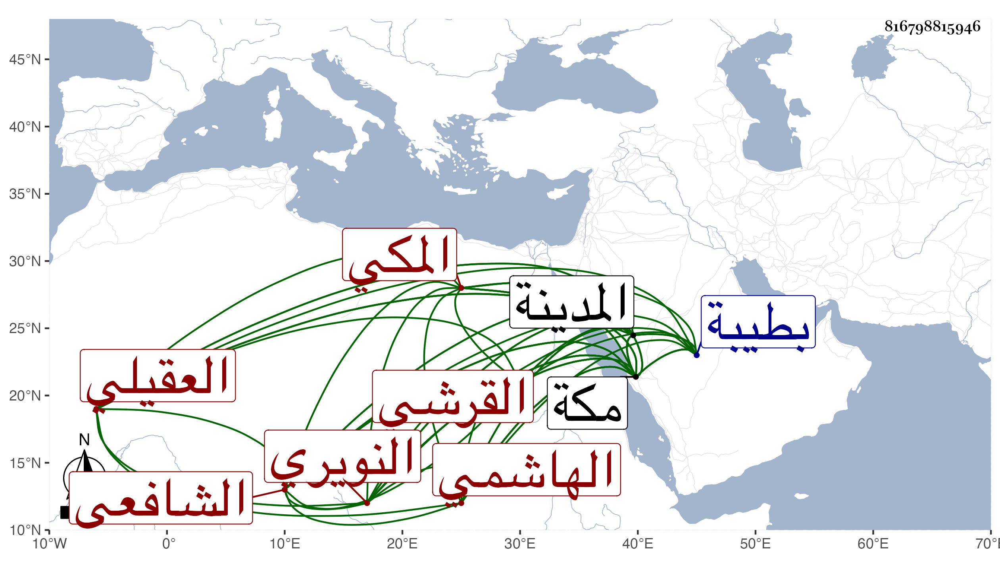

0902Sakhawi.DawLamic.ITO20230111-ara1.EIS1600.816798815946
Biography ID: 816798815946
93
محمد بن أحمد بن محمد بن أحمد بن عبد العزيز بن القسم بن عبد الرحمن العز أبو المفاخر بن المحب أبي البركات بن الكمال أبي الفضل القرشي الهاشمي العقيلي النويري الأصل المكي الشافعي ويعرف بابن القاضي محب الدين ، وأمه حبشية فتاة أبيه . ولد في رمضان سنة خمس وسبعين وسبعمائة بطيبة حين كان أبوه قاضيها ونشأ بها وأجاز له في التي تليها ابن أميلة وابن الهبل والصلاح بن أبي عمر وجماعة وسمع ظنا بالمدينة من أم الحسن فاطمة ابنة أحمد بن قاسم الحرازي وبمكة من ابن صديق وغيره بل سمع على شيخنا بمكة النخبة في سنة خمس عشرة وعني بالفقه كثيرا وكان فيه نبيها وحفظ التبيه والحاوي أو أكثره وكان يذاكر به وتفقه مدة طويلة بالجمال بن ظهيرة ويسيرا بالأبناسي لما قدم مكة في سنة إحدى وثمانمائة وأذن له في الإفتاء والتدريس ، وناب عن أبيه في الخطابة والحكم وفي درس بشير ، وكذا درس بالأفضلية واستقل بعده بها وكذا ولي الحسبة والنظر على الأوقاف والربط ، وصرف مرارا بالجمال بن ظهيرة ، وكان صارما في الأحكام عارفا محتملا ذا مروءة مديم التلاوة تمرض بالفالج وغيره . ومات في ربيع الأول سنة عشرين وكثر الأسف عليه ودفن عند جده الكمال أبي الفضل . ذكره الفاسي مطولا والمقريزي في عقوده وقال كان صارما عارفا بالأحكام سمحا محتملا للأذى كثير التلاوة فيه مروءة ، والتقى بن فهد في معجمه وشيخنا في أنبائه وقال أنه كان مشكور السيرة في غالب أموره والله يعفو عنه ، وقد ترجمته في تاريخ المدينة أيضا .
